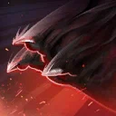
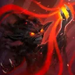
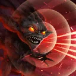
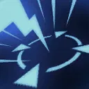

Yoda (Dark Side Vision)
A corrupted Force Master, unleashing devastating dark side powers with unmatched speed
A corrupted Force Master, unleashing devastating dark side powers with unmatched speed

Deal Special damage to target enemy twice and Daze them for 1 turn, and all Sith allies recover 10% Health and Protection. If target enemy is already Dazed and all allies are Sith, Stun them for 1 turn. During Yoda's turn, he gains 10 Siphon until the end of the encounter.

Deal Special damage to all enemies and all Sith allies recover 25% Health and Protection. Dispel all debuffs from all other Sith allies and inflict Yoda with them (excluding stackable debuffs). Then, inflict all debuffs on Yoda on the target enemy and dispel all debuffs on Yoda. Yoda Siphons Defense from target enemy.
Siphon Defense: Gain a percentage of Defense equal to this unit's Siphon until the end of the encounter and the target loses that much Defense (stacking, excludes raid bosses and Galactic Legends)

Deal Special damage to all enemies and grant target Sith ally Potency Up for 1 turn, Yoda Stealths for 2 turns, and all allies gain 2 stacks of Heal Over Time and Protection Over Time for 2 turns. If there is more than one ally present at the start of battle, target other Sith ally gains Dark Master's Training until the end of battle, which can't be copied, dispelled, or prevented.
If all allies are Sith and the ally in the Leader slot is Gungan, inflict Demoralized on all enemies for 2 turns, which can't be copied, dispelled, evaded, or resisted. Yoda gains 5 Siphon for each ally with Dark Master's Training until the end of the encounter.
Dark Master's Training: -20% Tenacity, +50% Critical Damage, Defense Penetration, and Offense

At the start of battle, Yoda gains Dark Master's Training. Allies with Dark Master's Training gain the following benefits:
- Whenever they use a Basic ability they dispel all buffs from target enemy
- Whenever they use a Special ability they inflict target enemy with Buff Disruption for 1 turn which can't be resisted
- At the end of their turn, all Sith allies recover 15% Protection
- Have their Health and Protection recovery effects increased by 30%
- Take 35% reduced damage from enemy's attacking out of turn and Provoke that enemy for 1 turn
Yoda has +30% Defense. If the ally in the Leader slot is a Sith Gungan, all Sith allies have +100% Health Steal and +50% Max Health, and whenever enemies gain bonus Turn Meter, Yoda gains 200 Speed until the start of his next turn.
Whenever a Sith ally is inflicted with a debuff, Yoda gains 7% Turn Meter. While an enemy is debuffed, reduce their Health and Protection recovery effects by 30%. At the end of Yoda's turns, all other Sith allies gain 5% of Yoda's Defense (stacking) until the end of the encounter.
Omicron Boost : While in Territory Battles: At the start of battle, all Sith allies gain 200% Max Protection and 80 Speed. Whenever an ally is inflicted with a debuff, all Sith allies gain 5% Defense (stacking, max 150%) for the rest of battle. Whenever another Sith ally gains Dark Master's Training, a random Sith ally who doesn't have it gets it.
Whenever a Sith ally is Dazed or Stunned they dispel it, reset their cooldowns, and gain a bonus turn. The first time a Sith ally falls below 50% Health, they gain Damage Immunity for 1 turn. Sith allies take reduced damage from Percent Health damage effects. Enemies defeated by Sith allies can't be revived.